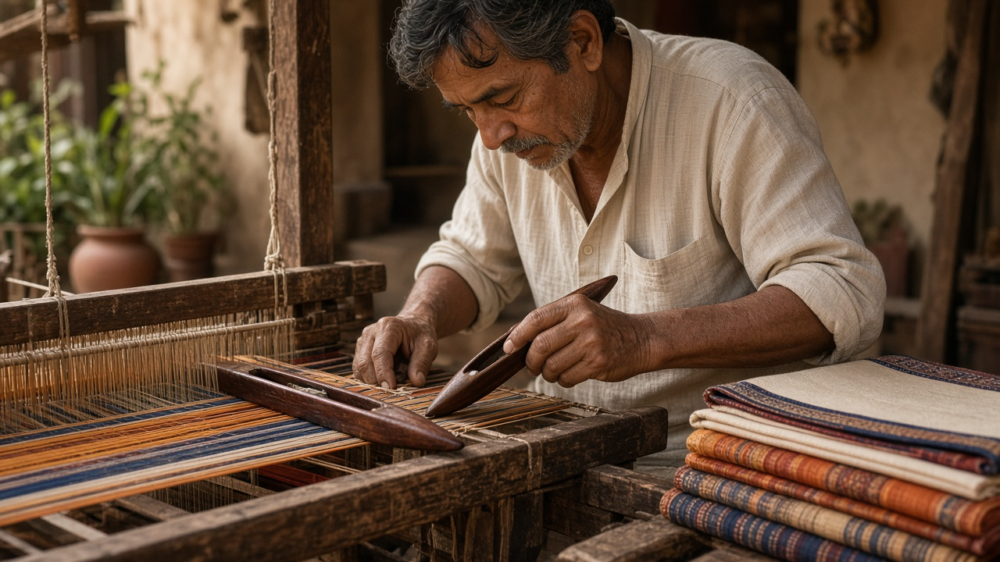
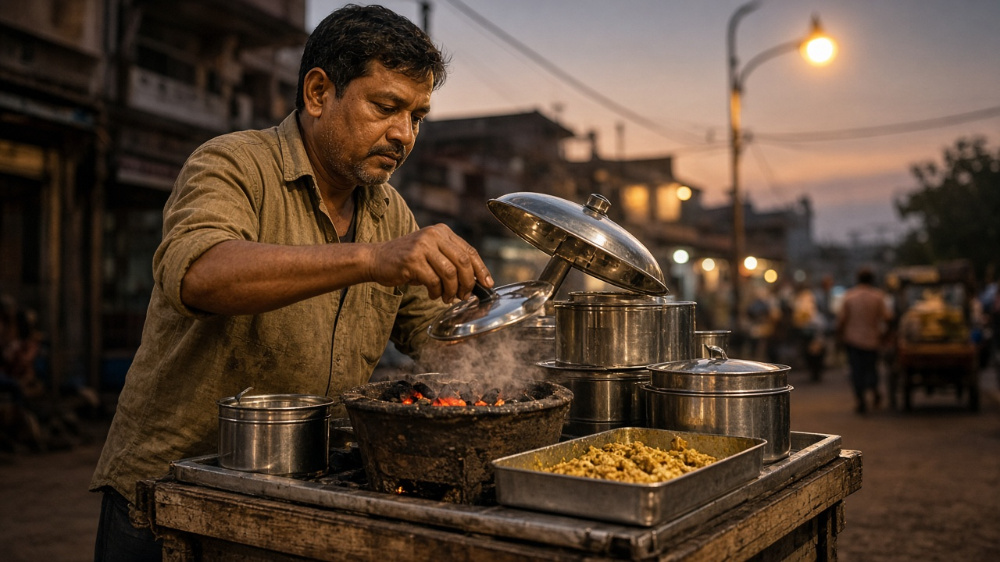
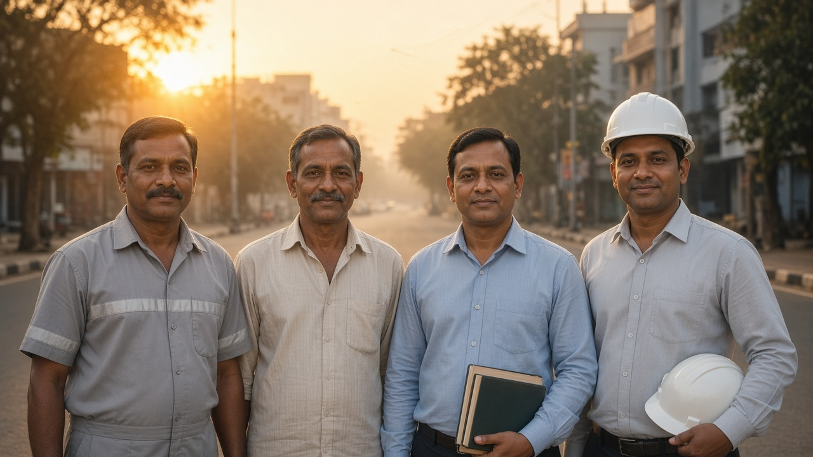
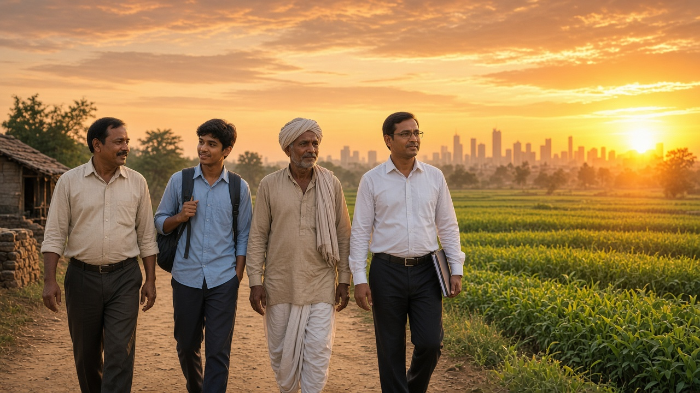

The vision of Atmanirbhar Bharat, as articulated by Prime Minister Narendra Modi, touches something deep within every Indian heart — the desire to see our nation stand tall, not because others have fallen, but because we have risen through our own strength and wisdom. This vision is fundamentally correct and necessary for our nation’s future. However, achieving true self-reliance requires conscious efforts from every citizen and institution — a mammoth task that demands sustained commitment across all levels of society.
This isn’t about shutting our doors to the world, but about opening them from a position of confidence and capability. The transformation requires moving beyond policy announcements to fundamental changes in how we think, work, and live.
When we walk through any Indian market, we see the contradiction that defines our current reality. The shopkeeper proudly displays foreign brands while local artisans struggle for recognition. The college student dreams of foreign universities while our own institutions lack resources. The parent saves money to buy imported goods while nearby factories close due to lack of demand. This isn’t anyone’s fault — it’s simply where we are. But it’s not where we have to stay.
True self-reliance begins with an honest question each of us must ask: What would make me choose Indian products and services with the same confidence I place in foreign alternatives? The answer to this question holds the key to our collective transformation.
Quality First Mindset
Every morning, millions of Indians wake up and go to work. The tea seller at the railway station, the software engineer in Bangalore, the farmer in Punjab, the teacher in a village school — each person holds a piece of India’s reputation in their hands. When the tea seller ensures his tea is fresh and his stall is clean, when the engineer writes code with care, when the farmer tends his crops with knowledge, when the teacher prepares lessons with dedication — these small acts of quality consciousness create the foundation of national trust.
Think about the last time you recommended a local business to a friend. What made you confident in that recommendation? It was their consistency, their attention to detail, their commitment to doing things right. Now imagine if every Indian approached their work with this same mindset. The roadside mechanic would become as trusted as any international service center. The local tailor would create clothes that rival global brands. The neighborhood restaurant would serve food that tourists would travel to experience.
This transformation doesn’t require new technology or massive investments. It requires each of us to see our work as our signature on India’s future.
Meeting Quantity Without Compromising Quality
India feeds 1.4 billion people, produces millions of graduates, manufactures countless products. The scale of our operations is unprecedented in human history. Yet scale often becomes the enemy of quality when we try to do more without thinking better. The real challenge isn’t choosing between quantity and quality — it’s designing systems that deliver both.
Consider the mother who cooks for her large family. She doesn’t compromise on taste or nutrition despite the quantity she must prepare. Instead, she organizes her ingredients, perfects her methods, and creates systems that ensure every meal meets her standards. This same principle applies to every sector of our economy.
The farmer who feeds hundreds of families must think beyond just increasing yield to enriching soil and improving nutrition. The factory producing thousands of units must focus on processes that eliminate defects rather than just meeting production targets. The school teaching hundreds of students must ensure every child learns rather than just covering the syllabus.
When we solve the puzzle of scale without compromise, we don’t just serve India — we show the world a new way of thinking about mass production and service delivery.
Speaking with Depth and Truth
In our enthusiasm to showcase India’s potential, we sometimes paint pictures that are brighter than reality. We speak of becoming a superpower while our children study under trees. We celebrate our IT prowess while struggling with basic digital infrastructure. We proudly announce grand plans while existing projects remain incomplete.
This tendency to oversell and under-deliver damages our credibility more than any external criticism ever could. The businessman who promises delivery dates he cannot meet, the politician who announces schemes without proper planning, the student who claims expertise in subjects he barely understands — each contributes to a culture where words and reality exist in separate worlds.
True strength comes from accurate self-assessment. When we know exactly where we stand, we can plan exactly where we want to go. When we acknowledge our current limitations, we create space for genuine improvement. When we speak truth, we build the trust necessary for sustainable progress.
The most respected individuals and nations are those whose words align with their actions, whose promises reflect their capabilities, and whose achievements exceed their claims.
Listen First, Act More
We live in a time of instant reactions and quick judgments. The moment we encounter a problem, we rush to offer solutions. The moment we see an opportunity, we jump to grab it. This urgency, while sometimes necessary, often leads us to solve the wrong problems or miss the real opportunities.
The successful businessman spends more time understanding his customers than promoting his products. The effective teacher listens to student questions before explaining concepts. The wise leader gathers information from all stakeholders before making decisions. This pattern of listening before acting, understanding before implementing, creates solutions that actually work.
In our personal lives, this means taking time to understand family needs before making major decisions. In our professional lives, it means studying market requirements before developing products. In our civic lives, it means understanding community challenges before proposing initiatives.
When we master the art of deep listening, our actions become more effective, our solutions more relevant, and our leadership more trusted.
Transforming Agriculture
Every grain of rice on our plate represents a farmer’s hope, hard work, and skill. Yet somehow, we’ve created a society where parents tell their children, “Study hard so you don’t have to become a farmer.” This attitude reveals a fundamental misunderstanding of agriculture’s role in our economy and our lives.
Modern agriculture is as much about technology as traditional farming was about intuition. Today’s successful farmers use satellite data to monitor crop health, employ precision techniques to optimize water usage, and apply scientific methods to improve soil fertility. They are entrepreneurs, scientists, and stewards of the land.
When society begins to see farming as a sophisticated profession requiring knowledge, skill, and innovation, more of our brightest minds will choose agricultural careers. When urban India understands that food security is national security, investment in agricultural education and infrastructure will increase. When we celebrate farmers as the guardians of our civilization rather than as people who couldn’t find “better” jobs, farming will attract the talent and resources it deserves.
This shift in perception alone could transform rural India, ensuring food security while creating prosperity in villages across the nation.
Conscious Consumption
Every purchase we make is a vote for the kind of economy we want to build. When we buy a product, we’re not just acquiring an item — we’re supporting a business model, encouraging certain practices, and contributing to someone’s livelihood.
The family that chooses local handloom over mass-produced textiles isn’t just buying clothes — they’re preserving traditional skills, supporting rural artisans, and maintaining cultural heritage. The consumer who selects Indian brands isn’t just making a purchase — they’re creating jobs, encouraging innovation, and building economic strength.

This doesn’t mean blind loyalty to local products regardless of quality or value. It means making informed choices that consider not just immediate personal benefit but also long-term collective impact. It means asking questions: Where was this made? Who benefits from this purchase? What kind of future am I supporting with this decision?
When millions of consumers begin thinking this way, their collective choices create powerful economic currents that can transform entire industries.
Beyond Quick Fixes
India is famous for jugaad — the ability to create clever solutions with limited resources. This skill has helped us solve countless immediate problems and demonstrates our natural innovation ability. However, our future requires moving from temporary fixes to permanent solutions, from individual cleverness to systematic excellence.
The street vendor who creates an ingenious way to keep food warm shows the same innovative thinking that, when properly channeled and supported, could develop world-class food preservation technologies. The mechanic who repairs vehicles with improvised tools demonstrates problem-solving skills that could lead to breakthrough manufacturing processes.

The challenge is creating systems that harness this innovation potential and transform it into scalable, reliable solutions. This requires supporting our innovators with proper resources, encouraging them to think beyond immediate fixes, and creating markets that reward systematic solutions over temporary patches.
When we successfully channel our jugaad mentality into structured innovation, we create solutions that serve not just our immediate needs but establish new standards for the world.
Consistency in Everything
Excellence isn’t achieved through occasional great efforts but through consistently good ones. The musician who practices daily, even when uninspired, develops skills that surpass the naturally talented person who practices sporadically. The business that serves customers well every day builds stronger reputation than the one that provides exceptional service only occasionally.
In our personal lives, consistency means maintaining our values even when it’s difficult, keeping our commitments even when it’s inconvenient, and pursuing our goals even when progress seems slow. In our professional lives, it means delivering quality work regardless of circumstances, treating colleagues with respect regardless of their position, and maintaining ethical standards regardless of pressures.
This principle of consistency extends to our national character. When tourists know they can expect cleanliness in every Indian city, when investors know they can rely on our business practices, when partners know they can trust our commitments — this reliability becomes our greatest competitive advantage.
Building this consistency requires discipline, patience, and the understanding that small daily efforts create extraordinary long-term results.
Respecting All Work
In our society, success is often measured by salary, social status, or professional prestige. This creates artificial hierarchies where some forms of work are considered more valuable than others. Parents push children toward certain careers not based on aptitude or interest but on social perception.
Yet our society functions because of all kinds of work. The sanitation worker who keeps our cities clean, the farmer who grows our food, the teacher who shapes young minds, the engineer who designs our infrastructure — each role serves an essential purpose. When we honor all forms of honest work, we create an environment where people can pursue their true calling without social pressure.

This shift in perspective would unleash tremendous potential. How many natural teachers have been forced into engineering? How many potential farmers have been pushed toward office jobs? How many gifted artisans have abandoned their crafts for more “respectable” careers?
When society values contribution over status, when parents support children’s authentic interests, when communities celebrate diverse forms of success — we tap into human potential that’s currently being wasted.
Thinking Beyond Ourselves
True success considers its impact on others. The business owner who creates jobs while generating profits, the student who shares knowledge while excelling personally, the citizen who considers community welfare while pursuing individual goals — these people understand that sustainable success comes from lifting others as we rise.
This expanded thinking applies to our daily decisions. The person who doesn’t litter thinks about community cleanliness. The driver who follows traffic rules considers other people’s safety. The consumer who chooses sustainable products thinks about future generations.
When enough individuals begin thinking this way, their collective consciousness creates a society where personal success and common good are aligned rather than in conflict.
Encouraging Research Culture
Our universities and institutions must become centers of curiosity and discovery. Too often, students study to pass exams rather than to understand concepts. Teachers focus on completing syllabi rather than inspiring inquiry. Researchers work in isolation rather than addressing real-world challenges.
A vibrant research culture would encourage students to question everything, explore new possibilities, and contribute original thinking. It would support teachers in pursuing innovative methods and groundbreaking investigations. It would connect academic research with practical applications that serve society.
When our educational institutions become engines of discovery and innovation, they’ll produce not just graduates but leaders, inventors, and problem-solvers who can address the challenges of tomorrow.
What Government Must Provide
While citizens drive cultural transformation, government must create the foundation that makes progress possible.
Clean Air
Every breath we take either nourishes or harms our body. Clean air isn’t just an environmental luxury — it’s an economic necessity. When children can’t concentrate in school due to pollution, when workers fall sick frequently, when healthcare costs drain family savings — polluted air becomes a drag on our entire economy.
Yet we often see practices that worsen the problem while appearing to solve it. Every morning, sweepers push dust from roads back into the air, creating clouds that settle back within hours. We destroy decades-old trees for urbanization, replacing them with saplings that will take years to provide the same air purification benefits.
Government must rethink these basic practices — developing cleaning methods that actually improve air quality, protecting mature trees as environmental infrastructure, and coordinating policies that prioritize public health without stifling growth.
Clean Water
Water touches every aspect of life — health, agriculture, industry, and economic growth. Yet we often see water supplied through rusty pipes, contaminated at source, or available only at certain hours, forcing families to store water in conditions that breed bacteria.
Government must treat water as strategic infrastructure. This means ensuring consistent supply through reliable distribution systems, protecting water sources from industrial contamination, and implementing quality monitoring that citizens can trust. When people have confidence in their water supply, healthcare costs decrease and productivity increases.
Honest Medical Practices
When people lose faith in healthcare, they delay treatment, seek questionable alternatives, and suffer preventable complications. We see patients charged differently for the same procedures, unnecessary tests prescribed for profit, and medicine prices that vary dramatically between providers.
Healthcare trust requires transparent pricing standards, standardized treatment protocols, and accessible quality care regardless of economic status. Government must regulate pricing transparency, ensure ethical treatment guidelines are followed, and create accountability systems that prioritize patient welfare over provider profits.
Quality Education
Education shapes every other aspect of society, yet we often see students memorizing without understanding, teachers completing syllabi without ensuring comprehension, and graduates lacking practical skills despite holding degrees.
Quality education requires curriculum that connects classroom learning with real applications, teacher training that emphasizes understanding over completion, and assessment methods that measure genuine capability. Government must ensure educational resources focus on developing thinking skills, not just information retention.
Fair Law and Order
Justice forms the foundation of social trust. When laws apply differently based on wealth or connections, when procedures are delayed unnecessarily, when enforcement is inconsistent — people lose faith in the system and seek alternatives outside legal frameworks.
Government must create predictable, accessible legal processes where timelines are respected, procedures are transparent, and outcomes depend on facts rather than influence. This requires training law enforcement in consistent application of rules and designing systems that minimize opportunities for preferential treatment.
Corruption-Free Services
Every interaction between citizens and government either builds or erodes public trust. When simple services require multiple visits, unofficial payments, or personal connections, people waste time and money that could be used productively.
Digital governance has shown how technology reduces corruption while improving efficiency. Government must expand transparent, time-bound services where citizens know exactly what documents are needed, how long processes will take, and can track progress without depending on individual officers’ discretion.
Safety for Everyone
True security means every citizen can pursue their goals without fear of discrimination, violence, or harassment. When security is unequal — when women feel unsafe in public spaces, when minorities face discrimination, when economic status determines police response — human potential is wasted.
Government must ensure law enforcement serves all citizens equally, creating environments where rights are protected regardless of background, beliefs, or circumstances. This requires training focused on serving communities rather than controlling them, and accountability systems that address bias and misconduct promptly.
Moving Forward Together
Atmanirbhar Bharat isn’t a government program or a political slogan — it’s a way of thinking that transforms how we approach every aspect of life. It’s the shopkeeper who takes pride in serving customers well, the student who studies with genuine curiosity, the farmer who treats land as a sacred trust, the civil servant who sees public service as a noble calling.

This transformation happens one person, one family, one community at a time. It spreads through the choices we make, the standards we maintain, the respect we show for others’ work, and the responsibility we take for collective welfare.
When our children grow up in an India where excellence is expected, honesty is valued, diversity is celebrated, and opportunity is available to all — they won’t need to look elsewhere for education, careers, or life satisfaction. They’ll have everything they need to build fulfilling lives while contributing to their community.
This is the India we’re building together — not through grand declarations or dramatic gestures, but through the daily discipline of doing ordinary things extraordinarily well. The journey requires patience, but the destination is worth every effort we make.